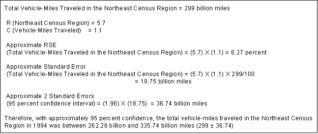

EIA Home > Transportation Home Page > Chapter 5. Detailed Tables
Chapter 5. Detailed Tables
The following tables present detailed characteristics of vehicles in the residential sector. Data are from the 1994 Residential Transportation Energy Consumption Survey.
Table Organization
The "Detailed Tables" section consists of three types of tables: (1) Tables of totals such as number of vehicle-miles traveled (VMT) or gallons consumed; (2) tables of per household statistics such as VMT per household; and (3) tables of per-vehicle statistics, such as vehicle fuel consumption per vehicle. The tables have been grouped together by specific topics such as model-year data or family-income data to facilitate finding related information. The Quick-Reference Guide to the detailed tables indicates major topics of each table.
Quick-Reference Guide
Topic and Table Number
- Summary
- Totals - Table - 5.1
- Per Household - Table - 5.2
- Per Vehicle - Table - 5.3
- Vehicle Model Year
- Total Vehicles - Table - 5.4
- Miles per Gallon - Table - 5.5
- Gallons per Vehicle - Table - 5.6
- Family Income
- Total Miles Traveled - Table - 5.7
- Total Gallons - Table 5.8
- Miles per Household - Table - 5.9
- Gallons per Household - Table - 5.10
- Household Composition
- Total Vehicles - Table - 5.11
- Miles per Household - Table - 5.12
- Miles per Gallon
- Per Vehicle - Table - 5.13
- Vehicle Type
- Total Gallons - Table - 5.14
- Miles per Vehicle - Table - 5.15
- Total Vehicles - Table - 5.16
- Number of Households by Vehicle Fuel Expenditures
- Number of Households - Table - 5.17
- Household and Vehicle Energy Expenditures
- Dollars per Household - Table - 5.18
Row and Column Factors
These tables present estimates of characteristics, vehicle fuel consumption, miles driven, and fuel efficiencies for all vehicles used for personal transportation in the United States. Since the estimates are based on a sample survey, they are subject to error. To help the reader compute an approximate relative standard error (RSE) for each of the estimates in the detailed tables, row and column factors are displayed on the top line and in the far-right column of each table. To calculate the RSE for a specific estimate, multiply the row factor by the column factor.
Using Row and Column Factors to Estimate the Standard Error
RSEs were calculated for all statistics in this publication, although they cannot be presented due to space limitations. However, the RSEs are presented in a generalized form. The method of presenting generalized RSEs of statistics uses sets of row and column factors inserted in the top row and right-most column of figures in each table. This method of presentation allows the readers to calculate an approximate RSE for each statistic. To estimate the RSE of a statistic
RSEAij = Ri X Cj 
in the ith row and jth column of a particular table, the approximation RSEAi,j for the original RSEi,j is given by: Where: Ri is the RSE row factor given at the right-most margin of row i in the tables, and Cj is the RSE column factor given at the top of column j.
The following example illustrates this procedure:
Referencing the second row of Table 5.1 labeled "Northeast," and the third column labeled "Vehicle-Miles Traveled (billion)," yields an estimate of 299 billion miles driven. The RSE row factor is R2 = 5.7, and the RSEcolumn factor is C3 = 1.1. The approximate RSE for the estimate is, therefore,
RSEA2,3 = 5.7 x 1.1 = 6.27 percent
The standard error derived from row and column factors can be used to construct confidence intervals and to perform hypothesis tests by standard statistical methods. However, because the generalized variance procedure gives only approximate RSEs, such confidence intervals and statistical tests must also be regarded as only approximate. For the example above, the RSE determined directly by the half-sample method is actually 3.9 percent, not 6.27 percent.
Determination of the Standard Error of the Difference Between Two Statistics
The procedure used to compute the standard error of the difference between two statistics follows:
This procedure assumes the two statistics are not correlated. The following example illustrates this procedure. Households with children drove an average of 24,800 miles per household in 1994. Households without children drove an average of 18,900 miles, for a difference of 5,900 miles. The RSEs for households with and without children are 2.7 and 4.6, respectively. The corresponding standard errors are 670 miles and 869 miles, respectively. Therefore, the standard error for the difference is:
If 1.96 times the standard error is greater than the difference between the statistics, the difference is not statistically significant at the .05 level of significance (the level used to test significance of inferences in this report). In this example, 1.96 times the standard error equals 1,494 miles, while the difference is 6,300 miles. Therefore, the conclusion is that, in 1994, there was a significant difference in average mileage driven per household between households with and without children.
File Last Modified: February 1, 2002
If you are having any technical problems with this site, please contact the EIA Webmaster at wmaster@eia.doe.gov